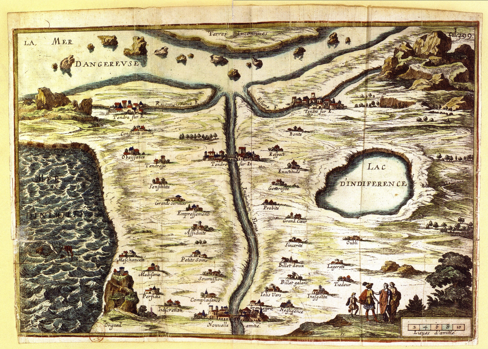

Manifiesto Clélie
CLÉLIE
El Mapa de Ternura de Madeleine de Scudéry como raíz histórica de la sociometría cualitativa y el humanismo computacional.
Exigencias éticas y rigor científico: manifiesto humanista Clélie, anonimato estricto por diseño y anonimato programado, rol deontológico del Investigador Principal (IP), arquitectura tecnológica, glosario interactivo y La Carte du Tendre.
Veto absoluto a decisiones automatizadas por IA. La tecnología propone y asesora; la decisión final corresponde siempre a la prudencia y compasión de un profesional colegiado. No todo lo matemáticamente eficiente es éticamente correcto.
Prohibición jurídica y contractual de usar diagnósticos socio-termodinámicos para sanciones, despidos o marginación. El IP ejerce derecho de veto vinculante frente a cualquier tentativa de purga o instrumentalización gerencial.
El IP es el depositario exclusivo del libro de correspondencias censales. Los algoritmos procesan únicamente identificadores anónimos SHA-256 en memoria volátil; los analistas de sistemas jamás tocan identidades nominativas.
Interdicción de dashboards o informes automáticos descontextualizados. La Ficha Clélie individual se devuelve en entrevista orientativa guiada, impidiendo que ningún participante conozca qué miembros específicos le votaron o descartaron.
Destrucción irreversible de direcciones IP, marcas telemáticas y registros efímeros tras consolidar la sociomatriz. Amnistía vincular programada: ningún sujeto puede quedar encasillado ni estigmatizado históricamente.
El pipeline NEXORD bloquea a bajo nivel la ingesta de datos empíricos (REAL/PROPIO). Los cuestionarios y la emisión de enlaces telemáticos solo se activan mediante la firma digital de la clave criptográfica del IP registrado.
Obligación documental de acreditar la resolución formal de Rectorado, Dirección General o Comité de Empresa, acompañada del dictamen favorable del Comité de Ética de la Investigación (CEI) antes de cualquier pase sociométrico.
Separación funcional estricta: el IPI (Facilitador de Intervención) conduce la dinámica grupal sin acceso a identidades globales desanonimizadas; el IPIS (Auditor Científico Superior) homologa la variedad Grassmann Gr(k, N), Fiedler λ2 y firma el sellado forense.
Inmutabilidad de variables complementarias (V10) y semánticas (A16) pactadas. El IP debe comunicar presencialmente al grupo el Mensaje de Confianza, garantizando el secreto fiduciario absoluto y la voluntariedad de participación.
Secuencia estándar automatizada: 1) Wizard de configuración; 2) Simulador nativo (SIMULACION.xlsx); 3) Orquestador analítico (tablas/, graficos/, informes/, sintesis/); 4) Payload JSON para motor 3D/4D Moviola.
Ingestión y cálculo matricial instantáneo de hipercubos relacionales (grupos, tiempos, criterios). Descomposición de la sociomatriz en componentes simétricas S y antisimétricas A, resolviendo la topología vincular sin cuellos de botella.
Motor cinemático propio con interpolación geodésica, nubes puntillistas socio-termodinámicas (σ = 0.032), isobaras de calor KDE y rotación orbital interactiva a 60 FPS con controles de trayectoria temporal.
Conexión nativa con plataformas educativas (Moodle, Canvas, Blackboard) y ERPs corporativos mediante tokens criptográficos de un solo uso. Emisión de informes en HTML interactivo autónomo, JSON y CSV abiertos.
Proyección en variedades de Grassmann Gr(k, N) y convergencia de autovalores Laplacianos (λ₂ de Fiedler y Estrada EE). Permite la comparación intergrupal rigurosa eliminando distorsiones debidas al tamaño de los grupos (N).
Cada análisis emite un sellado criptográfico con hash SHA-256 de las matrices de entrada y salida, asegurando la inmutabilidad y auditabilidad de los resultados empíricos ante comités científicos y de bioética.

Diseño del mapa alegórico de las relaciones interpersonales. Cartografía pacífica basada en la estima y la reciprocidad, precursora conceptual de los grafos sociométricos.
Formalización del método sociométrico, la sociomatriz ordinal, el sociograma bidimensional y la medición objetiva de las atracciones y rechazos en colectivos humanos.
Definición del grupo como campo de fuerzas psicosociales en equilibrio cuasi-estacionario, fundamentando el modelado dinámico y la salud relacional de los colectivos.